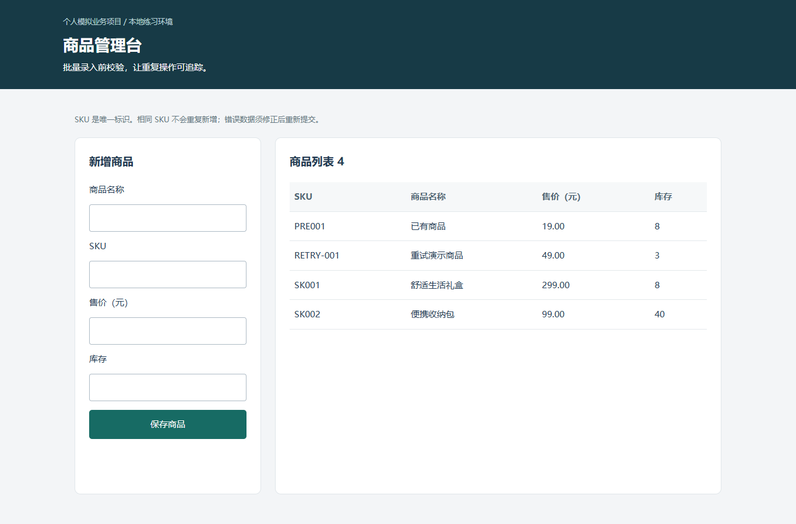
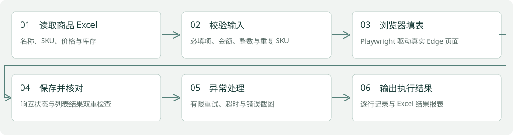

个人模拟业务项目 · 2026.10
电商商品批量录入与校验机器人
从 Excel 到真实浏览器表单，记录每一行的成功、跳过与失败。
Python / Playwright / Excel / SQLite

业务问题与项目目标
模拟运营人员逐条把商品名称、SKU、价格与库存填进后台，容易漏填、重复录入且难以追溯失败原因。
个人负责内容
本次个人模拟项目，使用 AI 辅助开发；实现本地管理页面、SQLite 唯一 SKU、浏览器表单机器人、执行记录与端到端验证。
系统架构与流程
Excel → 输入校验 → Playwright / Edge 填表 → HTTP 后台 → SQLite 唯一约束 → 页面列表核对 → 执行报表与失败截图。

实现细节
- 机器人使用网页标签定位并实际填写、点击、等待保存响应，再核对页面列表；不是打印模拟成功日志。
- 本批次重复 SKU 在输入侧跳过；后台相同 SKU 内容一致时跳过，内容冲突时失败，禁止自动覆盖。
- 最大重试 2 次；测试模式显式注入一次性失败、持续失败及响应超时，保留真实错误页面截图。
- 保存逐行状态、尝试次数、失败原因、截图路径与 Excel 执行结果；重复运行不新增已有商品。
运行证据与核对结果
10 行模拟商品：新增 3 条、输入重复 1 条、后台已存在 1 条、无效 3 条、故障失败 2 条。一次性故障商品第 2 次成功；持续失败和超时各尝试 3 次并截图。首次批次 16.18 秒，重跑后新增 0 条。
两项新项目合计 17 项 pytest 测试通过，包含真实浏览器端到端测试。查看测试报告
当前边界与后续工作
故障由 --test-mode 明确启用，只用于验证异常处理。未连接商业后台，也没有影刀实操成果；README 提供迁移步骤。首次运行耗时含浏览器启动、页面交互、重试与结果写出，不代表生产性能。